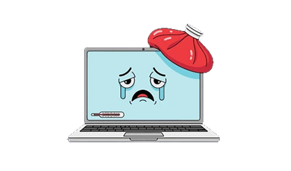
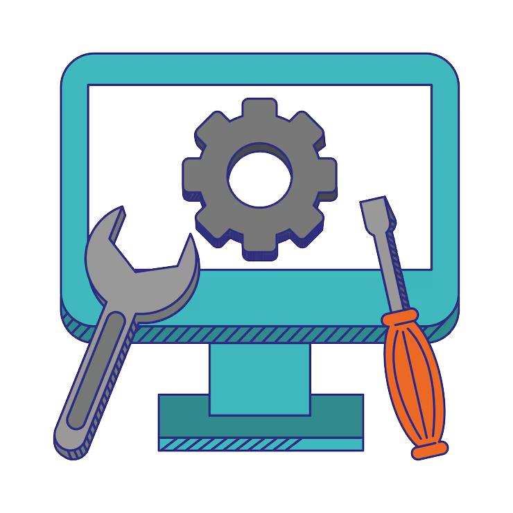

Nuestros Servicios
- Mantenimiento preventivo
- Reparación de equipos electrónicos
- Instalación de sistemas
- Soporte técnico
Es la revisión, limpieza y reparación programada de equipos e instalaciones para evitar
fallas,
garantizando su buen funcionamiento y prolongando su vida útil.

El proceso técnico de diagnosticar, ajustar, reparar o reemplazar componentes dañados en
dispositivos

Proceso de preparar, configurar y poner en funcionamiento componentes de software (programas,
sistemas operativos)
o hardware (equipos, redes) para que funcionen correctamente en un entorno informático
Servicio de asistencia, ya sea preventivo o correctivo, que ayuda a los usuarios a resolver
problemas técnicos,
de hardware o software en equipos tecnológicos.

Sobre Nosotros
Somos especialistas en mantenimiento y reparación brindando soluciones eficientes y confiables.
Contacto
Teléfono: +593 98 340 9500
Correo: elbarto04d@gmail.com